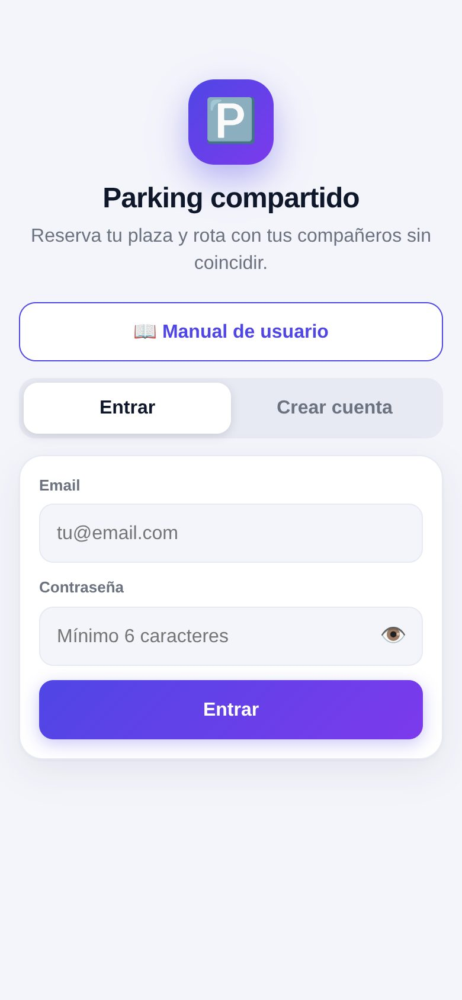
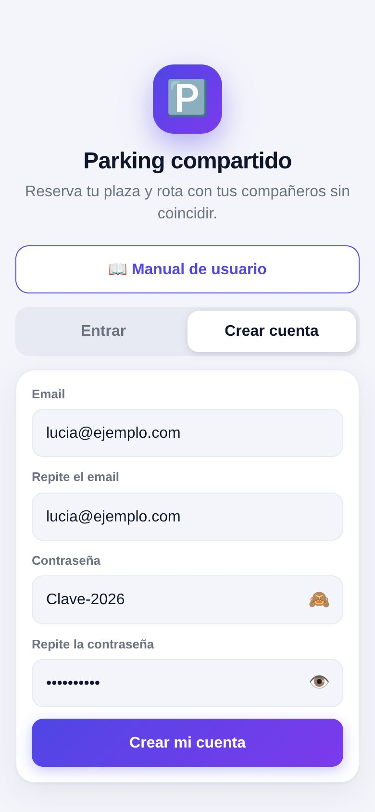
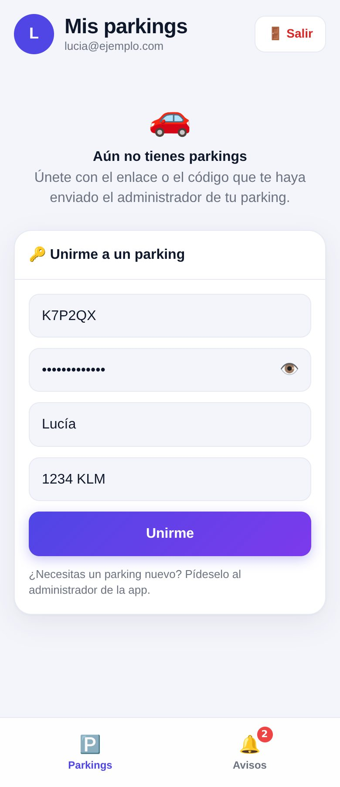
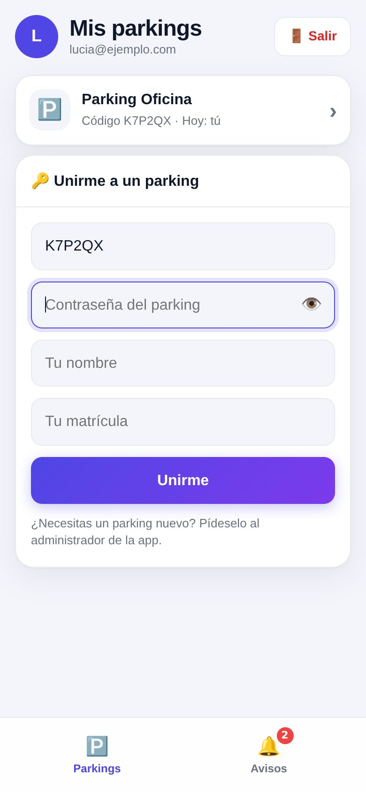
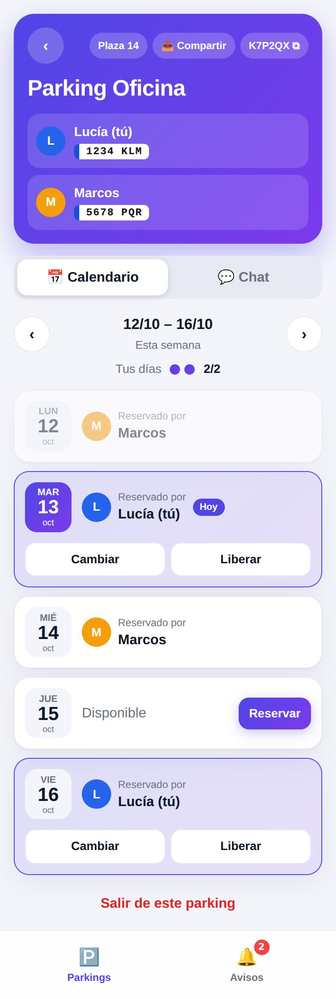
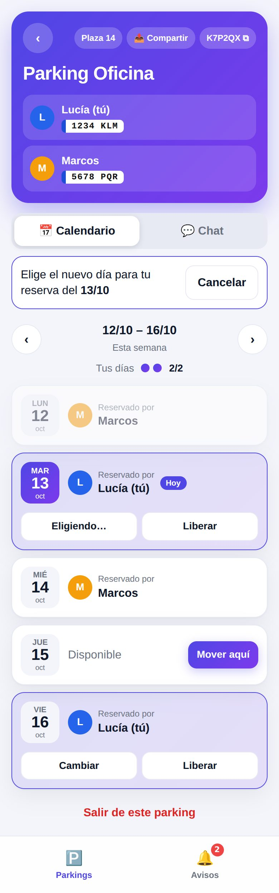
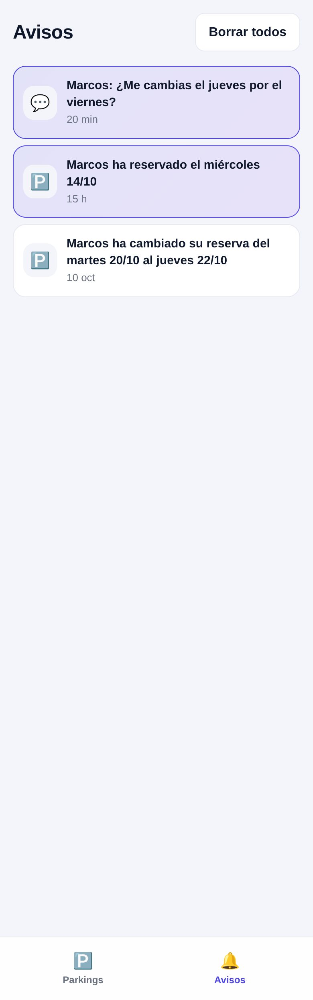
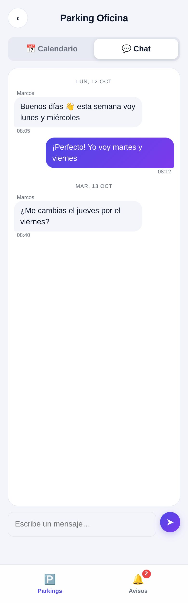

Todo lo que necesitas para reservar tu plaza, de la cuenta al chat. Las capturas usan datos de ejemplo.
No hace falta ir a ninguna tienda. Se instala desde el navegador y queda con su icono, como cualquier app.
En Android, si ves el botón 📲 Instalar app en la pantalla de inicio, púlsalo y listo.

Pantalla de inicio

Crear cuenta: el ojo 👁️ muestra la contraseña y 🙈 la oculta
El ojo aparece en todas las contraseñas de la app. Úsalo para comprobar que la has escrito bien.
Si la app te pide confirmar el email, abre el correo que te llega, pulsa el enlace, vuelve a la app y pulsa Entrar.
Los parkings los crea el administrador de la app. Te enviará por separado un enlace con el código y la contraseña del parking.

Unirte con código y contraseña
¿Necesitas un parking nuevo? Solo puede crearlo el administrador: pídeselo y te enviará el enlace.
Al entrar ves la lista de tus parkings, con su código y quién aparca hoy. Toca uno para abrirlo.

Mis parkings y barra inferior
Arriba ves el nombre del parking, la plaza, el código y a tus compañeros con su matrícula. Debajo, la semana de lunes a viernes. Cada día muestra:

Calendario de la semana
Reservar: pulsa Reservar en un día disponible. Tu compañero recibirá un aviso.
Cambiar: pulsa Cambiar en tu reserva y luego Mover aquí en el día libre que prefieras. Con Cancelar lo dejas como estaba.

Eligiendo el nuevo día
Liberar: pulsa Liberar y confirma. El día queda disponible para los demás.
Reglas: cada persona puede reservar un máximo de días por semana (normalmente 2). Solo se pueden reservar días del mes en curso y no se pueden modificar días pasados. Las flechas ‹ › cambian de semana.
Compartir: el botón 📤 Compartir envía el enlace y el código del parking (la contraseña se pasa aparte). Tocar el código lo copia.
La pestaña Avisos te cuenta lo que pasa en tus parkings: cuando un compañero reserva, cambia o libera un día, y cuando te escribe en el chat. Los avisos nuevos aparecen resaltados.

Avisos recientes
Los avisos se ven dentro de la app. No llegan como notificación en la pantalla de bloqueo del móvil.
Dentro de cada parking, pulsa la pestaña Chat para dejar mensajes a tus compañeros: avisar de un cambio, pedir un favor o pactar los días.

Chat del parking
Has llegado al máximo de días de esa semana (lo ves en "Tus días", por ejemplo 2/2). Libera uno si quieres reservar otro.
Tu compañero lo reservó un instante antes. Elige otro día disponible.
La app guarda un historial corto para ir rápida. Los días de otros meses aparecen atenuados como "Fuera de este mes".
Solo el administrador puede crearlos. Pídeselo y te enviará el enlace y la contraseña.
La app se abre, pero necesita conexión para ver y cambiar las reservas.
Cierra la app del todo y vuelve a abrirla. Si sigue igual, recarga la página desde el navegador.